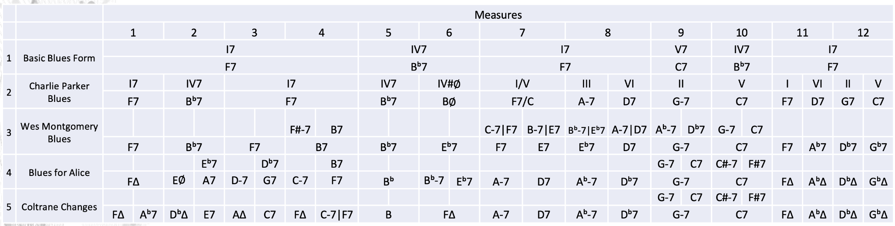

Keep the form fixed first
The 12 measures are the invariant frame. The first task is simply to recognize the functional pillars of an F blues: F7, B♭7 and C7. Later operations alter the routes between these landmarks, but the bar numbers never move.
One operation at a time
The sequence below is reconstructed from the successive systems in the supplied MuseScore teaching file. The short labels preserve the terminology written in that source; the explanatory sentence underneath is the interpretation used in this lab.
What is accumulating?
Preparation
A target dominant can be approached by its own minor-seventh partner, creating a local ii–V. In the source this appears as “prep. by min 7”.
Dominant propagation
A newly inserted event can itself acquire a dominant preparation. This is the source’s “back-prop. of 7th”: harmonic motion begins to propagate backward from a target.
Tritone substitution
A dominant can be replaced by the dominant a tritone away while preserving its guide-tone tritone. This is exactly the operation explored in Lab 5.
Left deletion
After a new approach chord has been inserted, the earlier chord occupying the left portion of the measure can be removed. The harmonic rhythm changes even though the target remains.
Now reveal the larger table
This is the comparison table used in class. At this point the student has already manipulated the operations that create density, so the named rows no longer arrive as unexplained walls of chord symbols.

Listen through the construction sequence
The supplied teaching package contains ten full-length audio examples. Buttons 1–9 correspond to the visible construction systems above. The source also contains a tenth playback whose displayed chord symbols duplicate the ninth system; it is retained here as source material rather than assigned a new transformation that is not explicit in the score.
What changed, and what remained invariant?
What changed?
- harmonic density inside individual bars
- approach chords and local tonicizations
- dominant roots through tritone substitution
- harmonic rhythm through insertion and deletion
- the amount of directed chromatic motion
What remained invariant?
- the twelve-measure temporal frame
- recognizable tonic / IV / dominant landmarks
- the return toward F
- the possibility of hearing later versions as transformations of a blues rather than unrelated progressions